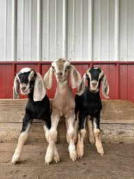

Goats are awesome
Goats, members of the Capra aegagrus hircus species, are among the oldest domesticated animals in human history, believed to have been tamed over 10,000 years ago in the Fertile Crescent. These hardy ruminants have played a vital role in agriculture and human sustenance, providing milk, meat, fiber, and hides. As highly adaptable creatures, goats thrive in diverse environments, from mountainous terrains to arid deserts, showcasing their resilience and versatility.Click on this to read about Goat Yoga

Goats Diets
One of the most remarkable traits of goats is their diet. They are natural browsers, often preferring to eat shrubs, leaves, and vines rather than grazing on grass like sheep or cattle. This dietary preference allows goats to clear invasive plant species and thrive in areas where other livestock might struggle to find sustenance. Their robust digestive systems can process a wide variety of plant material, making them valuable in ecological management.
Goats hobbies
Socially, goats are highly interactive animals that form complex hierarchies within their herds. These hierarchies are often determined through play, butting, and body language. Known for their curious and intelligent nature, goats can form strong bonds with humans and other animals. Their ability to learn and adapt makes them trainable and engaging companions for farmers and hobbyists alike.
Goats milk
A goat’s contribution to human livelihoods goes beyond milk and meat. Goat milk, rich in nutrients and easier to digest for many people compared to cow’s milk, is a staple in many cultures. It is also used to produce cheeses, yogurt, and other dairy products. Goat fibers, like cashmere and mohair, are prized for their softness and warmth, making goats essential in the textile industry.Types of Goats
- cute ones
- white onew
- brown ones
- black ones
- little ones
- ugly ones
Pracitcal uses
Beyond their practical uses, goats hold cultural and symbolic significance in many societies. They feature prominently in mythology, religion, and folklore, symbolizing fertility, vitality, and resilience. Whether as a source of livelihood, ecological ally, or cultural icon, goats remain indispensable animals whose influence spans the breadth of human history
Jump to top